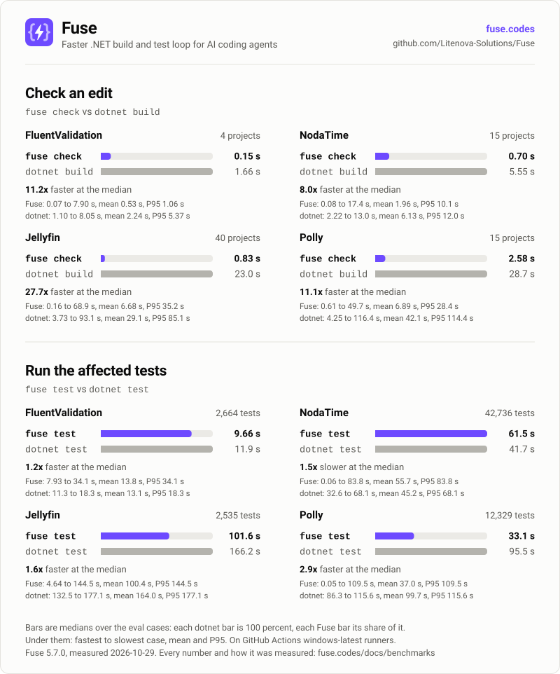

Docs / Understand
Benchmarks
On four open-source repositories, Fuse checked an edit 7.0x to 43.7x faster than dotnet build at the median, took 2.9x to 8.4x less time than the build over all 30 edits of each, and ran the affected tests 1.1x to 4.9x faster than dotnet test. It missed 1 compiler error in 120 generated cases (162 edits).
This page is for anyone deciding whether to rely on Fuse, and contributors comparing a change with the published numbers.
After reading it you know how fast and how accurate Fuse was, on what, how much the times spread, and where each number comes from. Evals explains how the numbers are produced and how to reproduce them.
The 6.0.0 results are not measured yet. Every number on this page is from Fuse 5.4.0, from the files its sources name. The next run records more per check (files checked, documents bound, kept answers, errors reused from an earlier check), per test run (projects planned and run, runs without MSBuild against runs with it, whole-project runs and why, selected against run tests, tests avoided where the changes compile to the same code as HEAD, and failed-rerun rounds), per no-code edit and scope form, and the new scale, stale and external-writer scenarios. Evals names every new field; this page quotes them once the files exist.
The four repositories are FluentValidation, a validation library, the small one; NodaTime, a date and time library; Jellyfin, a media server; and the .NET Community Toolkit, a set of libraries with one source generator for each supported compiler version. The evals in evals/Fuse.Evals run the fuse executable the way an agent does, and compare every answer with a real dotnet build or dotnet test. Each job ran on its own GitHub Actions windows-latest runner, with 4 logical processors and 16 GB of memory, that ran nothing else (Evals). On Windows x64 the fuse command is the native client, so the evals measure it.

Speed and accuracy #
A warm check runs on an engine that is already running and has loaded the edited project. A body edit changes the inside of a method. A signature edit renames a method, so Fuse also checks the dependent projects that use it. P50 and P95 are explained under Reading the numbers.
| Benchmark | FluentValidation | NodaTime | Jellyfin | Community Toolkit |
|---|---|---|---|---|
| Size | 4 projects, 2,664 tests | 15 projects, 42,700 tests | 40 projects, 2,535 tests | 26 projects, 12,449 tests |
Check an edit: fuse check vs dotnet build, median | 0.19 s vs 2.38 s (12.7x) | 0.60 s vs 4.20 s (7.0x) | 0.47 s vs 20.4 s (43.7x) | 0.51 s vs 17.4 s (33.8x) |
Check an edit: fuse check vs dotnet build, total over the 30 cases | 26.3 s vs 90.6 s (3.4x) | 59.8 s vs 176.3 s (2.9x) | 97.0 s vs 816.2 s (8.4x) | 138.2 s vs 832.8 s (6.0x) |
| Warm check after a body edit, P50 / P95 | 356 / 546 ms | 746 / 1,513 ms | 266 / 458 ms | 897 / 1,759 ms |
| Warm check after a signature edit, P50 / P95 | 3,709 / 30,629 ms | 2,692 / 15,600 ms | 86 / 131,388 ms | 507 / 34,898 ms |
| Warm check of an unchanged tree, P50 | 36 ms | 33 ms | 31 ms | 34 ms |
Run the affected tests: fuse test vs dotnet test, median | 8.31 s vs 8.87 s (1.1x) | 38.8 s vs 60.4 s (1.6x) | 99.4 s vs 163.5 s (1.6x) | 156.0 s vs 758.6 s (4.9x) |
Share of tests run by fuse test | 99.9 percent | 79.7 percent | 22.3 percent | 12 percent |
| Compiler errors missed | 0 in 30 cases | 1 in 30 cases | 0 in 30 cases | 0 in 30 cases |
| Errors contradicted by the build | 0 in 30 cases | 0 in 30 cases | 0 in 30 cases | 0 in 30 cases |
| Errors Fuse reported that the build could not confirm: deferred / unverifiable | 6 / 39 | 18 / 109 | 40 / 140 | 38 / 37 |
| Test selection cases whose change made a test fail | 8 of 10 | 7 of 10 | 2 of 10 | 9 of 10 |
| Failing tests missed | 0 in 10 cases | 0 in 10 cases | 0 in 10 cases | 1 in 1 case (see below) |
| Cases too large to match name by name | 0 | 2 | 0 | 0 |
| Several agents at once: the writers' longest wait for the request lock | 823 ms | 317 ms | 7,125 ms | 7,969 ms |
Three fuse build runs at once, five rounds: lock collisions | 0 | 0 | 0 | 0 |
| Engine memory after the latency checks | 735 MB | 415 MB | 448 MB | 1,120 MB |
| Engine memory at its peak during the checks and test rounds | 759 MB | 707 MB | 808 MB | 1,763 MB |
| Engine memory once idle, 50 seconds later | 451 MB | 352 MB | 339 MB | 1,019 MB |
Every number in the table comes from these twelve files in evals/results: correctness-FluentValidation-20261017-1306.json, selection-FluentValidation-20261017-1304.json, latency-FluentValidation-20261017-1445.json, correctness-NodaTime-20261017-1311.json, selection-NodaTime-20261017-1313.json, latency-NodaTime-20261017-1448.json, correctness-Jellyfin-20261017-1309.json, selection-Jellyfin-20261017-1326.json, latency-Jellyfin-20261017-1457.json, correctness-CommunityToolkit-20261017-1313.json, selection-CommunityToolkit-20261017-1344.json and latency-CommunityToolkit-20261017-1457.json. The exceptions are the project counts, which are the .csproj entries of each pinned solution whose files exist, as evals/Fuse.Evals/PinnedRepo.cs records them. They were measured with the native client of Fuse 5.4.0: the correctness and selection files in GitHub Actions run 39033310022 (build 5.4.0/2056ae4ab3ff4defae22d1da83fff501), and the latency files in run 39041505012 (build 5.4.0/6b9946e9249e4846bf763944cb3c5b6c), on FluentValidation at fa3c160, NodaTime at fcd80e1, Jellyfin at 1d7c6af and the Community Toolkit at b135626.
How the times spread #
A median hides the slow cases. This table gives, for each command, how its time spread over the cases: the fastest, the median, the mean and its standard deviation, P95 and the slowest, in seconds, from fuseStats and dotnetStats in the same files. A check is fast in most cases and slow in a few: the first check after the engine starts, and signature edits that load dependent projects. That is why its mean is several times its median.
| Repository, command | Cases | Fastest | Median | Mean | Standard deviation | P95 | Slowest |
|---|---|---|---|---|---|---|---|
FluentValidation, fuse check | 30 | 0.08 s | 0.19 s | 0.88 s | 2.40 s | 1.98 s | 13.3 s |
FluentValidation, dotnet build | 30 | 1.57 s | 2.38 s | 3.02 s | 1.94 s | 6.25 s | 10.8 s |
FluentValidation, fuse test | 10 | 7.76 s | 8.31 s | 11.1 s | 6.01 s | 24.5 s | 24.5 s |
FluentValidation, dotnet test | 10 | 8.42 s | 8.87 s | 9.57 s | 1.35 s | 12.7 s | 12.7 s |
NodaTime, fuse check | 30 | 0.05 s | 0.60 s | 1.99 s | 3.81 s | 10.8 s | 18.2 s |
NodaTime, dotnet build | 30 | 2.08 s | 4.20 s | 5.88 s | 3.78 s | 14.7 s | 15.5 s |
NodaTime, fuse test | 10 | 0.04 s | 38.8 s | 35.6 s | 16.6 s | 58.1 s | 58.1 s |
NodaTime, dotnet test | 10 | 42.8 s | 60.4 s | 58.1 s | 8.96 s | 70.2 s | 70.2 s |
Jellyfin, fuse check | 30 | 0.07 s | 0.47 s | 3.23 s | 7.35 s | 19.5 s | 34.8 s |
Jellyfin, dotnet build | 30 | 3.90 s | 20.4 s | 27.2 s | 24.0 s | 75.5 s | 94.2 s |
Jellyfin, fuse test | 10 | 4.39 s | 99.4 s | 95.1 s | 34.1 s | 130.6 s | 130.6 s |
Jellyfin, dotnet test | 10 | 144.5 s | 163.5 s | 162.8 s | 11.1 s | 175.9 s | 175.9 s |
Community Toolkit, fuse check | 30 | 0.14 s | 0.51 s | 4.61 s | 9.95 s | 13.6 s | 52.2 s |
Community Toolkit, dotnet build | 30 | 8.58 s | 17.4 s | 27.8 s | 25.5 s | 88.3 s | 115.0 s |
Community Toolkit, fuse test | 10 | 8.66 s | 156.0 s | 118.9 s | 69.6 s | 180.3 s | 180.3 s |
Community Toolkit, dotnet test | 10 | 687.1 s | 758.6 s | 759.1 s | 44.0 s | 822.3 s | 822.3 s |
The native client #
On Windows x64, Linux x64, Linux Arm64 and macOS Arm64 the fuse command is the native client, compiled ahead of time to native code, and elsewhere it runs fuse.dll on the .NET runtime (How it works). The same jobs ran the checks a second time with the managed client, on the same runner and the same engine code, so the difference between the two is the client alone. Every hook and command pays it.
| Warm check, P50, managed client vs native client | FluentValidation | NodaTime | Jellyfin | Community Toolkit |
|---|---|---|---|---|
| Unchanged tree | 300 vs 36 ms | 237 vs 33 ms | 219 vs 31 ms | 220 vs 34 ms |
| Body edit | 605 vs 356 ms | 1,004 vs 746 ms | 397 vs 266 ms | 1,136 vs 897 ms |
| Signature edit | 4,648 vs 3,709 ms | 3,231 vs 2,692 ms | 280 vs 86 ms | 621 vs 507 ms |
Outside the engine, a body-edit check took 243 to 268 ms with the managed client and 36 to 62 ms with the native client (outsideEngine in bodyEditPhases): the managed client spends that time starting the .NET runtime and compiling its own code before it sends its request. A check of an unchanged tree is almost all client time, so it became 6.6x to 8.3x faster, and a check with more work in the engine gained 131 to 258 ms. fuse test rounds are dominated by the test run and are not compared here.
The managed client's numbers come from the four files in evals/results/managed: latency-FluentValidation-20261017-1447.json, latency-NodaTime-20261017-1451.json, latency-Jellyfin-20261017-1502.json and latency-CommunityToolkit-20261017-1501.json, which record build 5.4.0/54a77ed259254010b8af1839212eaa35, the managed build of the same commit. The native client's numbers come from the latency files listed above.
Repeated checks and tests at once #
Two of the latency suite's multi-agent scenarios measure what several agents in one working tree do most (Evals). Stops is a stop hook checking every change again after a small fix: a body edit in one file of each code project, up to 20, a fuse check of every change, then five more, each after another body edit in the first file. A repeat binds the file that changed and can keep the errors of the others from the earlier check (errors kept from an earlier check); the files kept are counted per compiled document, one per target framework, so the count can exceed the changed files. Tests is one fuse test on its own and then two started together, each after another body edit; when two runs only take turns, the pair takes twice as long as one.
| Measurement | FluentValidation | NodaTime | Jellyfin | Community Toolkit |
|---|---|---|---|---|
| Stops: changed files | 3 | 11 | 20 | 4 |
| Stops: first check of every change | 102 ms | 2,594 ms | 2,064 ms | 479 ms |
| Stops: repeat after one body edit, P50 | 44 ms | 208 ms | 170 ms | 398 ms |
| Stops: most files a repeat kept the errors of | 2 | 3 | 19 | 9 |
Tests: one fuse test on its own | 0.04 s | 49.1 s | 114.9 s | 3.19 s |
| Tests: two started together, wall time | 0.25 s | 87.0 s | 153.1 s | 5.77 s |
| Tests: runs that did not pass | 0 | 0 | 0 | 0 |
Two runs at once took 87.0 s on NodaTime where two in turn would take 98.2 s, 153.1 s on Jellyfin against 229.7 s, and 5.77 s on the Community Toolkit against 6.38 s. On FluentValidation the edit was in FluentValidation.Tests.Benchmarks/AccessorCacheBenchmark.cs, which no test reaches, so fuse test ran no test and these rows measure only the plan.
These numbers come from multiAgent.stops and multiAgent.tests in latency-FluentValidation-20261017-1445.json, latency-NodaTime-20261017-1448.json, latency-Jellyfin-20261017-1457.json and latency-CommunityToolkit-20261017-1457.json in evals/results.
A slow analyzer #
The analyzers suite measures a generated 300-file project whose analyzer spends two seconds reading the whole project each time it starts, with its rule at error severity. The engine measured it at 4,005 ms on one file and ran it compilation-wide. The post-edit hook, which leaves it out and names it, took 47 ms at the median. fuse check took 2.12 s for one edited file and 2.16 s for twenty, one run of the analyzer each, and reported its error. The engine peaked at 268 MB and held 210 MB once idle.
These numbers come from analyzers-analyzer-fixture-20261017-1442.json in evals/results.
Reading the numbers #
What the accuracy rows count #
- Missed and contradicted. The correctness suite makes generated edits that change declarations, 162 edits over the 120 cases, runs
fuse checkon the edited files, and compares its errors with the errors a realdotnet buildreports beyond the ones HEAD already has. An error the build reports and Fuse does not is missed. An error Fuse reports that the build does not have, and that the suite cannot account for, is contradicted. - Deferred and unverifiable. The build reports fewer errors than exist in two situations, and the suite counts Fuse's extra errors there apart. When a project has a declaration error, the compiler stops before it binds method bodies or runs analyzers, and after any compiler error it skips its documentation checks (CS1570 to CS1592). Fuse reports those errors at once, and the build reports them only once the first errors are fixed, so they are deferred. When a project fails to build, MSBuild skips every project that references it; an error Fuse reports in such a project is unverifiable, because the build has no answer there.
- NodaTime's missed error. One edit made
DateAdjusters.AddPeriodprivate. The build compiles dependent projects against reference assemblies, which leave out private members, so it reported CS0117 "'DateAdjusters' does not contain a definition for 'AddPeriod'" at five places and the follow-on CS1503 "Argument 1: cannot convert from 'T'" inNodaTime.Demo/DateAdjustersDemo.cs. Fuse compiles against the source and reported CS0122 "'DateAdjusters.AddPeriod(Period)' is inaccessible due to its protection level" at the same five places. The CS1503 error is the one it missed.
What the time rows measure #
- Medians and speedups. A median is over the 30 correctness cases or the 10 selection cases. The speedup in parentheses is the
dotnetmedian divided by the Fuse median, rounded half up to one decimal, as in the chart. - Totals. The total row adds up the 30 correctness cases' times of each command (
totalinfuseStatsanddotnetStats), and divides the build total by the Fuse total. It is lower than the median ratio because the slowest checks are slower than the build they replace: the first check after the engine starts, and signature edits that load dependent projects. The slowest single check took 13,284 ms on FluentValidation, 18,209 ms on NodaTime, 34,829 ms on Jellyfin and 52,159 ms on the Community Toolkit. The total is closer to the time an agent saves over a whole task. - P50 and P95. Both use the nearest-rank method. P50 is the 8th fastest of the 15 body edits, which is their median, and the 5th fastest of the 10 signature edits. P95 is the slowest check of each kind.
- The signature-edit P95. The slowest signature edit is the one that loads the dependent projects and searches them for the first time; the median edit loads nothing. In the signature-edit runs, the slowest
loadDependentsphase took 33,339 ms on Jellyfin, which checked 27 dependent projects, and 14,113 ms on the Community Toolkit, which checked 12; the slowestreferenceSearchphase took 97,754 ms and 19,082 ms. - An unchanged tree. A check of a tree with no changes does almost nothing in the engine, so its time is the client's: starting the
fuseprocess, sending the request and reading the answer. The native client needs no .NET runtime to start, which is why it is 31 to 36 ms on every repository. - NodaTime's body edits. NodaTime builds with
TreatWarningsAsErrors, so every check there also runs the analyzers that can report a warning. That is why its body-edit check is slower than FluentValidation's and Jellyfin's. - Several agents at once. In the latency suite's writers scenario, up to four clients edit and check different projects while a fifth runs
fuse testthree times. The longest wait for the request lock was FluentValidation 823 ms; NodaTime 317 ms; Jellyfin 7,125 ms; Community Toolkit 7,969 ms. A test plan now holds the lock only while it syncs and selects tests, not while it emits the changed assemblies; a check still waits for a plan's selection, which loads the test projects the first time.
What the test rows mean #
- The
dotnet testtime. The truth side of each selection case runs onedotnet testof the whole solution, as a user runs it after an edit, which builds what changed and runs the test projects in parallel. Before 5.2.2 it ran the test projects one after another, which madedotnet testslower and the speedups larger. - Share of tests run. The share is the mean, over the 10 selection cases, of the tests
fuse testran divided by the tests in a full run. Every FluentValidation test uses the library, so each case ran 2,661 of its tests and the other 3 are skipped in a full run too; the time saved there comes from running without MSBuild. In 8 of the 10 NodaTime cases the change reached code thatNodaTime.TzdbCompiler, an application, uses behind its application host. Fuse cannot follow code that runs behind an application host to a test by name, so every test project that depends on it ran whole: 42,549 tests ran and 11 were skipped. On the Community Toolkit each change reaches one area of the code, and the cases ran between 148 and 3,621 of the 12,449 tests. - How the tests ran. FluentValidation: 9 without MSBuild, 1 with MSBuild; NodaTime: 9 without MSBuild, 1 with no affected test; Jellyfin: 10 without MSBuild; Community Toolkit: 10 without MSBuild.
- The Community Toolkit's missed test. In 1 case the full
dotnet testrun also failed one MVVM test thatfuse testdid not report as failing:Test_AsyncRelayCommand_ThrowingTaskBubblesToUnobservedTaskException. The case changedCommunityToolkit.HighPerformance, which no MVVM test project references, sofuse testdid not run the test, and the change could not reach it. The test waits for an unobserved task exception, as the MVVM tests missed in earlier results did, so a full run of every test project on a 4-core runner can fail it whatever changed. - Cases too large to match name by name. In 2 NodaTime cases 126 and 252 tests failed by name in a full run.
fuse testprints details for the first 10 failures and the names of the next 100, then counts the rest, so the suite could not match those cases name by name.
The other rows #
- Lock collisions. The latency suite runs three
fuse buildat once, five times, and counts output lines with MSB3021, MSB3026, MSB3027 or CS2012, the errors of two builds writing the same files. - Engine memory. The working set of the engine process, read three ways: right after the latency suite's checks and test rounds, when the engine has loaded every project they reached; the largest it reached during them, which Windows records for the process; and 50 seconds later, after the engine has returned the memory its requests freed, which is what an idle engine holds. A long test run leaves the engine idle for more than 30 seconds, so the first reading can already be after a release. The .NET runtime sizes its heap to the memory the machine has, so on a machine with more than the runners' 16 GB the engine keeps more.
How it was measured #
- Correctness: the suite makes generated edits, some that break the build and some that do not, and compares Fuse's errors with the errors a real
dotnet buildreports beyond the ones HEAD already has. Each case makes one edit, or two or three in different projects: 162 edits in the 120 cases. - Test selection: the suite makes generated changes to behavior, some of which make tests fail. It compares the failing test names exactly with a full
dotnet testrun. - Latency: the suite builds HEAD, then runs the
fuseexecutable after 15 generated body edits and 10 signature edits, and times each warm check. It also times 10 checks of the unchanged tree, fivefuse testrounds, and five scenarios for several agents in one repository: up to four clients editing and checking at once, threefuse buildruns at once five times, threefuse testrounds over two projects, a check of every change repeated after small fixes, and onefuse testagainst two at once. - The truth side, the real
dotnet buildanddotnet test, does not change while the repository and the eval code stay the same, so it is cached and measured once; each result file names where its truth was measured intruthOrigins. - Every result file records the commit of the repository it measured and the Fuse build that measured it, so each number can be traced to the source and to the executable behind it.
The evals are in evals/Fuse.Evals, every result file is in evals/results, and Evals describes each suite in detail.